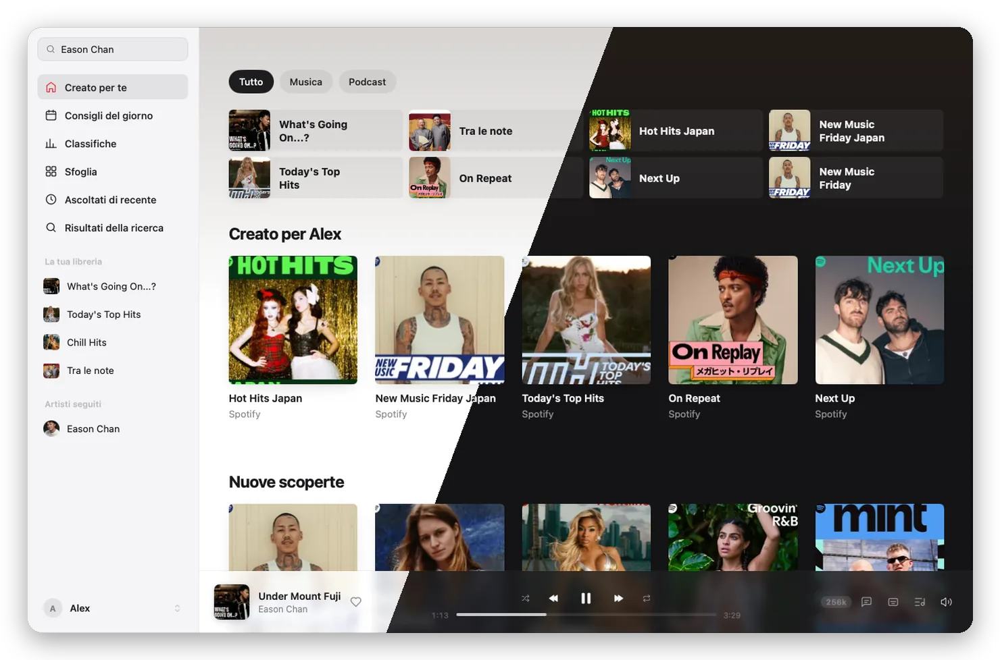
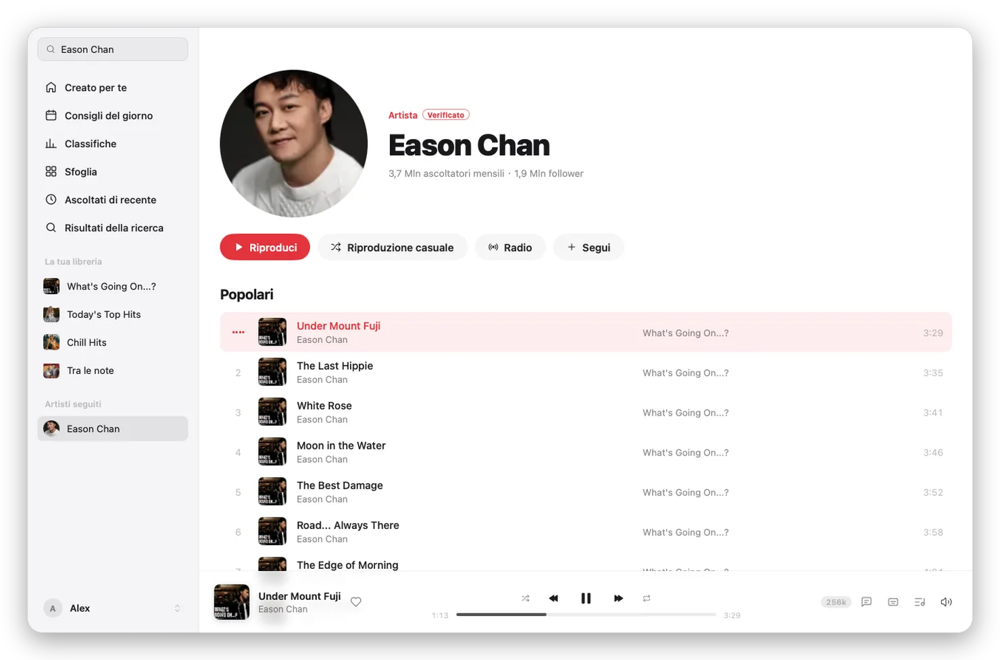
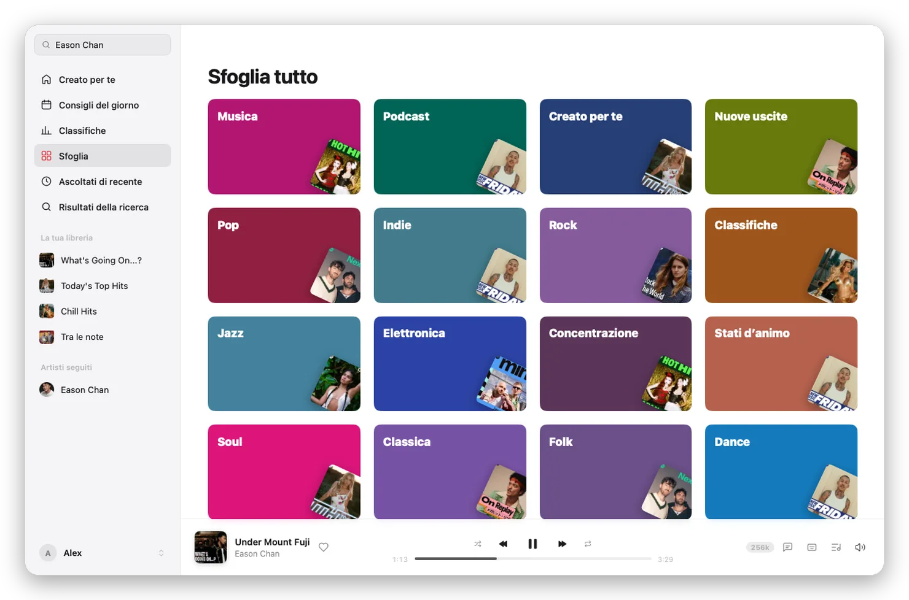
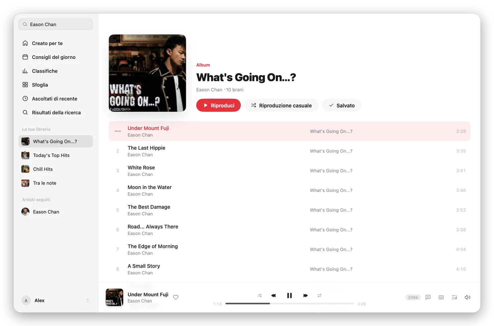
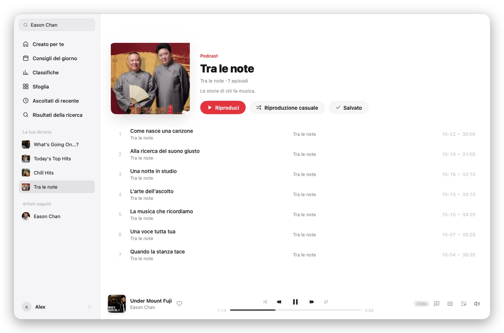
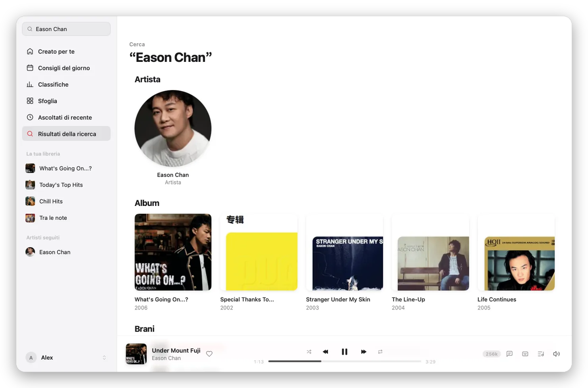
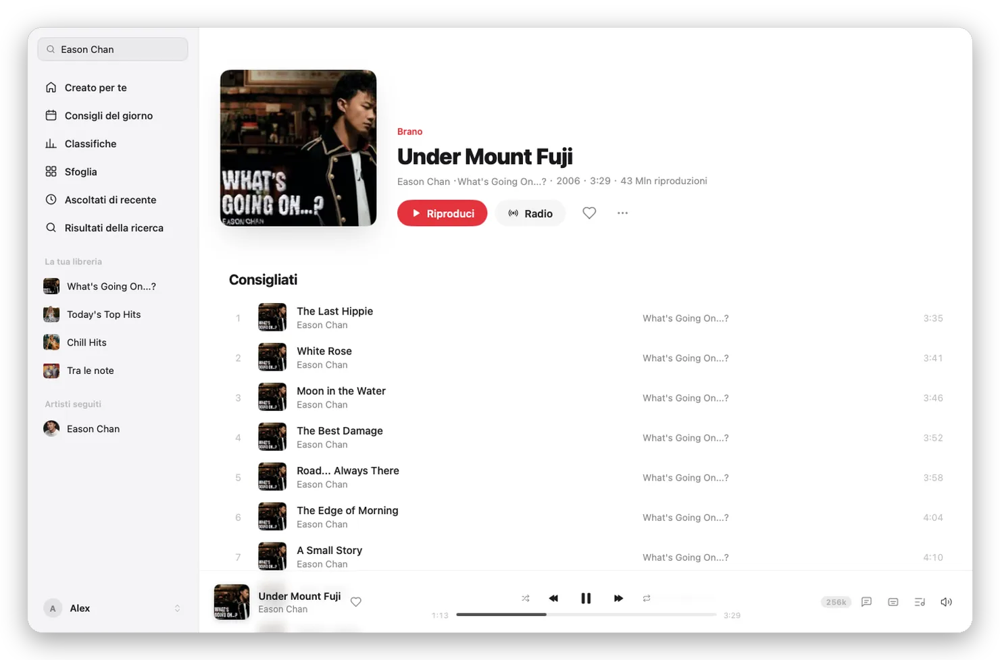
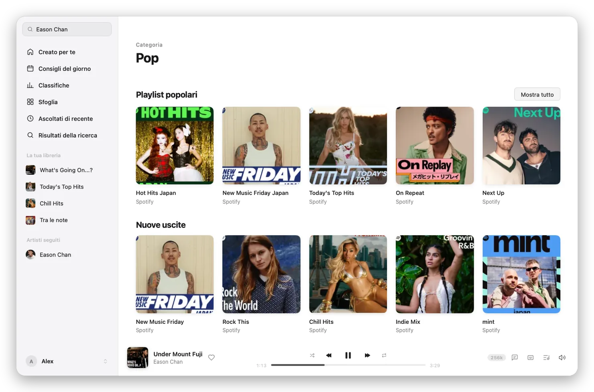
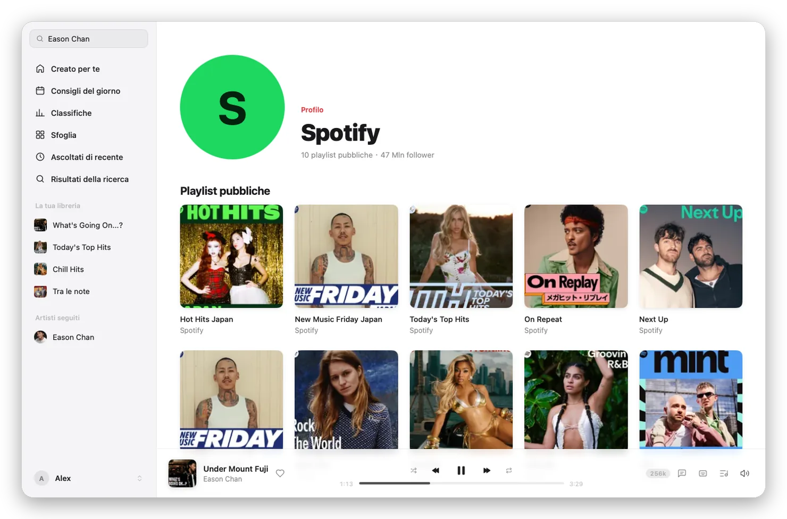

MYSPOTIFY · GO NATIVO (NO ELECTRON) · OPEN SOURCE · WINDOWS / MACOS
Spotify, in una vera app desktop
Interfaccia nativa in Go + MyGo sotto i 10 MB, con testi sul desktop, video musicali, podcast video, equalizzatore e Spotify Connect. Gli account gratuiti riproducono i brani per intero e puoi guardare anche senza accedere.
Un progetto personale open source (AGPL-3.0), senza legami con Spotify. Usarlo può far limitare il tuo account. Leggi prima i rischi

< 10 MBda scaricare: decomprimi o trascina in Applicazioni e parte
≈ 190 MBin uso mentre navighi, più un processo di decifratura di circa 60 MB durante la riproduzione
1–2 sdall'avvio a freddo ai contenuti, senza accedere prima
0analisi o tracciamenti: impostazioni e cronologia restano sul tuo computer




Sembra un programma desktop.
L'interfaccia è disegnata in modo nativo da MyGo, non è una pagina web in una cornice. Barra laterale, In riproduzione a tutto schermo, scena a ritmo, mini player nella notch su macOS, tasti multimediali, scorciatoie globali, temi chiaro e scuro.
Guarda senza accedere.
Ricerca, home, playlist, album e artisti sono lì appena apri l'app: come il web player, MySpotify si procura un'identità ospite. Accedi quando vuoi ascoltare.
Brani interi su free, 256k su Premium.
Accedi dalla pagina ufficiale di Spotify. L'audio è decifrato dal modulo DRM del componente web del sistema: 128k AAC per gli account gratuiti e 256k AAC per Premium nelle impostazioni.
Testi sul desktop che scorrono davvero.
Quello che manca a Spotify arriva da NetEase Cloud Music e LRCLIB verificando titolo e durata. Su Mac e Windows il testo fluttua sopra le finestre con i colori della copertina, blocco trasparente ai clic e nascondimento in pausa. Scopri i testi sul desktop
Anche i video musicali.
I brani con un video hanno una piccola etichetta: clicca per riprodurlo o passa al video dalla barra del player. Guardalo al posto della copertina, a finestra piena o a schermo intero, con il testo sotto e regolazione [ / ] da 0,5 s.
Podcast da ascoltare, guardare e leggere.
I podcast video mostrano le immagini con un clic, con velocità da 0,5× a 3× senza alterare il tono. La trascrizione scorre parola per parola e cliccando una frase salti subito lì.
TRACKLIST
Quasi tutto quello che ha Spotify
Si riproduce
1
HomeLe sezioni e i titoli di Spotify, filtrabili per musica o podcast
2
Mix giornalieri e classifiche
3
Sfoglia tutte le categorie
4
Playlist e albumModifica le playlist, filtra al volo con ⌘/Ctrl+F, sincronizzazione automatica
5
Pagine di artisti e braniCrediti completi per ruolo, riproduzioni, brani simili
6
RicercaBrani, artisti, album, playlist, podcast
7
Mi piace, follow, salvataggi
8
Riproduci come prossimo e coda
9
RadioDa un brano o da un artista
10
Ascoltati di recente, profilo e velocità podcastVelocità 0,5×–3× memorizzata per gli episodi
Non si riproduce
Audio losslessSolo nelle app ufficiali. Il 256k è per gli account Premium, in Impostazioni › Qualità audio
Download offlineServono Premium e il client ufficiale
Jam, DJServono Premium o l'app per telefono
Testi parola per parolaSpotify dà al web player solo la sincronizzazione per riga
Alcuni podcast su macOSShow ospitati da Spotify con audio solo Widevine e senza feed RSS pubblico
Supporto stabile per Mac Intel / LinuxInstaller sperimentali (Qt WebEngine su Linux); per Intel servono prove su hardware reale
Attività degli amici, file locali, BlendNon ancora realizzati
CONFRONTO
MySpotify vs client ufficiale e web player
Confronto trasparente: MySpotify punta su leggerezza nativa, testi sul desktop e zero telemetria; per audio lossless, offline e supporto ufficiale usa il client Spotify.
Voce
MySpotify (Go / MyGo)
Client ufficiale Spotify
Web Player Spotify
Motore UI
Go + MyGo nativo (no Electron)
CEF (motore Chromium integrato)
Scheda del browser
Dimensione download
< 10 MB
~150–250 MB
Nessuno
RAM tipica
~190 MB navigando (+~60 MB in play)
Spesso 500 MB – 1 GB+
Dipende dal browser
Testi sul desktop
Integrati (macOS e Windows, blocco clic)
No
No
Equalizzatore e crossfade
EQ a 6 bande (22 preset) e crossfade 0–12 s su Windows
Sì
No
Qualità audio e offline
128k free / 256k Premium AAC; solo online
Qualità superiore e download offline (Premium)
128k / 256k AAC; solo online
Privacy e supporto
Zero telemetria, open source; rischio account
Supporto ufficiale, include telemetria
Supporto ufficiale, annunci sul piano free
SCHERMATE
Uno sguardo all’app
Le schermate mostrano dati di esempio. Puoi cambiare la lingua dell’app in Impostazioni › Aspetto › Lingua.




DIETRO LE QUINTE
Le parti che non vedrai
Spotify Connect e Google Cast (sperimentale)
Il computer compare nell'elenco dispositivi sul telefono e può anche risvegliare e inviare musica agli speaker Google Cast / Nest sulla stessa rete locale.
Equalizzatore e dissolvenza incrociata su Windows
Equalizzatore a 6 bande con curva trascinabile (22 preset, regolabile anche da tastiera) e crossfade da 0 a 12 secondi tra i brani.
Notch su macOS e AppleScript
Mini player integrato nella notch su macOS e supporto AppleScript in sola lettura compatibile con l'app Musica per script, Raycast o barre di stato.
Gli errori non lo bloccano
Licenza scaduta, limite di richieste 429, errori 502 o cadute di rete vengono gestiti in automatico per riprendere esattamente da dove eri.
Mai scaricare un brano due volte
I brani ascoltati restano in cache cifrata sul disco, con cartella e limite personalizzabili nelle impostazioni.
I tuoi dati restano sul tuo computer
Impostazioni e cronologia sono locali e i cookie di rinnovo sono cifrati con DPAPI su Windows o Portachiavi su macOS.
LEGGI PRIMA
Prima di usarlo
Non è un client ufficiale
Usa le interfacce interne e non documentate del web player. Quando Spotify le cambia, può smettere di funzionare.
Il tuo account è a rischio
I termini di Spotify non permettono a programmi di terzi di accedere al servizio, quindi il tuo account potrebbe essere limitato o bloccato. Usa solo il tuo e nulla di commerciale.
Non riproduce pubblicità
Il piano gratuito del web player ha gli annunci; MySpotify non li riproduce. A Spotify probabilmente non piace. Se ti crea problemi, usa il client ufficiale o abbonati a Premium.
Non aggira il DRM
La decifratura la fa il modulo Widevine o FairPlay del tuo sistema, e il programma non riceve mai le chiavi né il contenuto decifrato. Ogni riproduzione richiede una licenza, quindi non funziona offline.
Apple silicon / Intel (sperimentale, prove su hardware in corso)
Apri il dmg e trascina MySpotify in Applicazioni.
L'app non è notarizzata da Apple, quindi il primo avvio viene bloccato: vai in Impostazioni di Sistema › Privacy e sicurezza e clicca Apri comunque in fondo. Oppure esegui xattr -dr com.apple.quarantine /Applications/MySpotify.app nel Terminale.
Clicca «Accedi a Spotify» e accedi nella pagina ufficiale di Spotify.
Le versioni successive si aggiornano da Impostazioni › Informazioni con un clic. Sono disponibili anche build sperimentali Linux .deb / .tar.gz documentate in LINUX.md.
Spazio Riproduci / pausa⌘/Ctrl ← → Precedente / successivo⌘/Ctrl D Mi piace⌘/Ctrl L In riproduzione⌘/Ctrl F Cerca / Filtra
FAQ
Domande
In cosa si differenzia MySpotify dal client desktop ufficiale di Spotify?
MySpotify disegna l'interfaccia in modo nativo con Go e MyGo invece di includere un intero browser Chromium/Electron. Il download pesa meno di 10 MB e usa circa 190 MB di RAM in navigazione (più circa 60 MB per il processo DRM di sistema durante la riproduzione). Offre testi sul desktop, fonti extra per i testi e zero telemetria; l'app ufficiale offre invece audio lossless, download offline, Jam/DJ e supporto ufficiale.
MySpotify supporta i testi fluttuanti sul desktop su macOS e Windows?
Sì. Cliccando su Testo sul desktop nella barra del player su macOS o Windows, la riga in corso resta sopra tutte le finestre, si illumina con i colori della copertina e supporta blocco trasparente ai clic, nascondimento in pausa e scorciatoia globale.
MySpotify è sicuro? Aggira il DRM o raccoglie dati?
MySpotify non aggira il DRM: la decifratura avviene nel modulo WebView2 Widevine (Windows) o WebKit FairPlay (macOS) del sistema. L'accesso avviene sulla pagina ufficiale di Spotify, i cookie di rinnovo sono cifrati con Windows DPAPI o Portachiavi macOS e non esiste alcun tracciamento.
Quale qualità audio è supportata con account gratuito e Premium?
Gli account gratuiti riproducono brani interi a 128k AAC come il web player. Gli account Premium possono attivare l'alta qualità a 256k AAC in Impostazioni › Qualità audio; se Spotify rifiuta la licenza 256k a un account gratuito, il brano passa automaticamente a 128k. L'audio lossless è solo nelle app ufficiali.
Perché un brano dice che al momento non può essere riprodotto?
Non è disponibile nella tua regione, oppure Spotify ha rifiutato la licenza (403). Se non lo riproduce nemmeno il web player, è una questione di licenze.
La barra del player dice che Spotify sta limitando le richieste. Cosa faccio?
Niente. MySpotify aspetta il tempo chiesto da Spotify e poi riprende da dove era. Il limite scatta se avvii brani di continuo in poco tempo.
Se i brani sono in cache, perché serve comunque la rete?
La cache contiene segmenti audio cifrati e per decifrarli serve una licenza rilasciata al momento da Spotify. La cache fa risparmiare dati e buffering e la cartella può essere cambiata nelle impostazioni.
Come imposto un proxy o esco completamente dall'app?
Segue il proxy di sistema oppure puoi inserire 127.0.0.1:7890, http://…, https://… o socks5://… in Impostazioni › Rete › Proxy. Chiudere la finestra manda l'app nella barra di sistema; clic destro sull'icona e scegli Esci da MySpotify per chiudere del tutto.